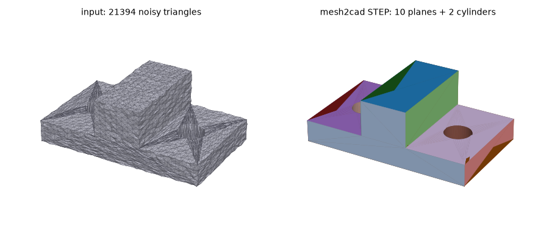
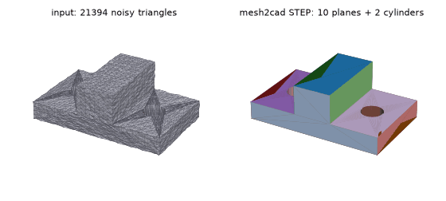

mesh2cad turns a triangle mesh (STL) back into a solid model: real planes, cylinders and chamfers in a STEP file, plus optional editable CadQuery or OpenSCAD code with the dimensions as parameters. Not just triangles wrapped in a STEP file.

pip install mesh2cad mesh2cad part.stl -o part.step
Run mesh2cad --help for the CadQuery and OpenSCAD export options. To use it from an MCP client, add the server command mesh2cad mcp (install with pip install "mesh2cad[mcp]").

Run mesh2cad part.stl -o part.step, then open the STEP in FreeCAD (File, Open) or upload it in Fusion 360. Because faces are fitted as real surfaces, you can select a hole or face and edit it, unlike a mesh converted with "mesh to solid".
Yes. That tool makes one flat face per triangle. mesh2cad fits primitives, so a cylinder becomes one cylindrical face.
Yes, for parts that pass the check: see STL to OpenSCAD and CadQuery.
No. It runs locally on your machine.
Nothing. It is open source on GitHub and PyPI.
mesh2cad is free and open source (see the GitHub repository for the license). Found an STL it handles badly? Open an issue with the file.